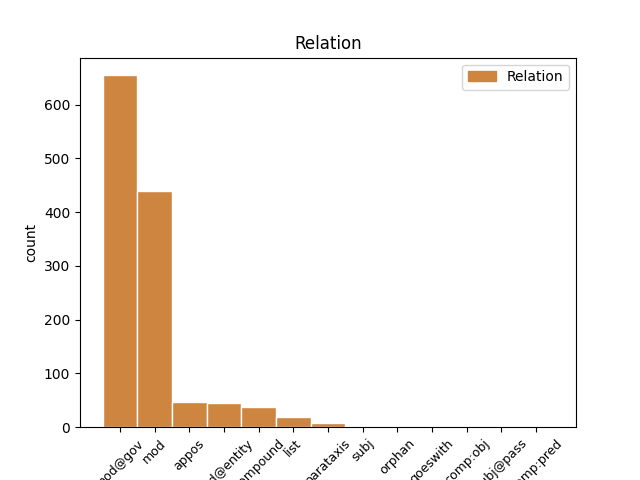
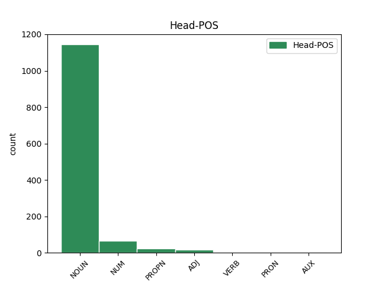
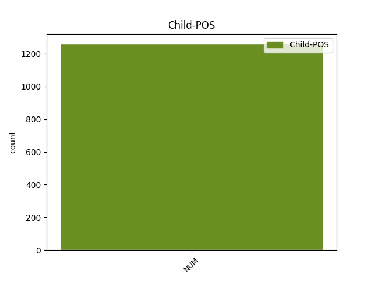

Distribution of features within this leaf



Agreement Rules sorted by frequency.
- When the dependent token is the modifer(mod) of the head token, and the dependent token is NUM.
1 Цветки _ _ _ _ 0 _ _ _
2 с _ _ _ _ 0 _ _ _
3 тонким _ _ _ _ 0 _ _ _
4 дневным _ _ _ _ 0 _ _ _
5 ароматом _ _ _ _ 0 _ _ _
6 , _ _ _ _ 0 _ _ _
7 около _ _ _ _ 0 _ _ _
8 3,1 3,1 NUM CD Animacy=Inan|Case=Gen|Gender=Masc|Number=Sing|NumType=Card 9 mod _ _
9 см см NOUN NN Animacy=Inan|Case=Gen|Gender=Masc|Number=Sing 0 _ _ _
10 в _ _ _ _ 0 _ _ _
11 диаметре _ _ _ _ 0 _ _ _
12 . _ _ _ _ 0 _ _ _
1 В _ _ _ _ 0 _ _ _
2 конце _ _ _ _ 0 _ _ _
3 XIX _ _ _ _ 0 _ _ _
4 начале _ _ _ _ 0 _ _ _
5 XX _ _ _ _ 0 _ _ _
6 века _ _ _ _ 0 _ _ _
7 в _ _ _ _ 0 _ _ _
8 городе _ _ _ _ 0 _ _ _
9 действовали _ _ _ _ 0 _ _ _
10 2 _ _ _ _ 0 _ _ _
11 чугунолитейных _ _ _ _ 0 _ _ _
12 , _ _ _ _ 0 _ _ _
13 механический _ _ _ _ 0 _ _ _
14 , _ _ _ _ 0 _ _ _
15 23 _ _ _ _ 0 _ _ _
16 солеваренных _ _ _ _ 0 _ _ _
17 , _ _ _ _ 0 _ _ _
18 4 _ _ _ _ 0 _ _ _
19 кирпичных _ _ _ _ 0 _ _ _
20 завода _ _ _ _ 0 _ _ _
21 , _ _ _ _ 0 _ _ _
22 3 3 NUM CD Animacy=Inan|Case=Nom|NumType=Card 23 mod@gov _ _
23 паровые паровой ADJ JJL Case=Nom|Degree=Pos|Number=Plur 0 _ _ _
24 мельницы _ _ _ _ 0 _ _ _
25 , _ _ _ _ 0 _ _ _
26 фарфоровое _ _ _ _ 0 _ _ _
27 и _ _ _ _ 0 _ _ _
28 макаронное _ _ _ _ 0 _ _ _
29 производства _ _ _ _ 0 _ _ _
30 , _ _ _ _ 0 _ _ _
31 содовый _ _ _ _ 0 _ _ _
32 и _ _ _ _ 0 _ _ _
33 химический _ _ _ _ 0 _ _ _
34 заводы _ _ _ _ 0 _ _ _
35 , _ _ _ _ 0 _ _ _
36 фабрика _ _ _ _ 0 _ _ _
37 терракотовых _ _ _ _ 0 _ _ _
38 плиток _ _ _ _ 0 _ _ _
39 . _ _ _ _ 0 _ _ _
1 Лу́га Луга PROPN NNP Animacy=Inan|Case=Nom|Gender=Fem|Number=Sing 0 _ _ _
2 1 1 NUM CD Animacy=Inan|Case=Nom|Gender=Masc|Number=Sing|NumType=Card 1 mod@entity _ _
3 -- _ _ _ _ 0 _ _ _
4 станция _ _ _ _ 0 _ _ _
5 Санкт-Петербург-Витебского _ _ _ _ 0 _ _ _
6 отделения _ _ _ _ 0 _ _ _
7 Октябрьской _ _ _ _ 0 _ _ _
8 железной _ _ _ _ 0 _ _ _
9 дороги _ _ _ _ 0 _ _ _
10 в _ _ _ _ 0 _ _ _
11 городе _ _ _ _ 0 _ _ _
12 Луга _ _ _ _ 0 _ _ _
13 Ленинградской _ _ _ _ 0 _ _ _
14 области _ _ _ _ 0 _ _ _
15 . _ _ _ _ 0 _ _ _
1 Через _ _ _ _ 0 _ _ _
2 две _ _ _ _ 0 _ _ _
3 недели _ _ _ _ 0 _ _ _
4 в _ _ _ _ 0 _ _ _
5 ответном _ _ _ _ 0 _ _ _
6 поединке _ _ _ _ 0 _ _ _
7 на _ _ _ _ 0 _ _ _
8 стадионе _ _ _ _ 0 _ _ _
9 `` _ _ _ _ 0 _ _ _
10 Гролс _ _ _ _ 0 _ _ _
11 Весте _ _ _ _ 0 _ _ _
12 '' _ _ _ _ 0 _ _ _
13 голландцы _ _ _ _ 0 _ _ _
14 одержали _ _ _ _ 0 _ _ _
15 верх _ _ _ _ 0 _ _ _
16 со _ _ _ _ 0 _ _ _
17 счётом _ _ _ _ 0 _ _ _
18 2 2 NUM CD Animacy=Inan|Case=Nom|Gender=Masc|Number=Sing|NumType=Card 0 _ _ _
19 : _ _ _ _ 0 _ _ _
20 1 1 NUM CD Animacy=Inan|Case=Nom|Gender=Masc|Number=Sing|NumType=Card 18 appos _ SpaceAfter=No
21 , _ _ _ _ 0 _ _ _
22 `` _ _ _ _ 0 _ _ _
23 Шериф _ _ _ _ 0 _ _ _
24 '' _ _ _ _ 0 _ _ _
25 владел _ _ _ _ 0 _ _ _
26 инициативой _ _ _ _ 0 _ _ _
27 большую _ _ _ _ 0 _ _ _
28 часть _ _ _ _ 0 _ _ _
29 матча _ _ _ _ 0 _ _ _
30 , _ _ _ _ 0 _ _ _
31 но _ _ _ _ 0 _ _ _
32 не _ _ _ _ 0 _ _ _
33 сумел _ _ _ _ 0 _ _ _
34 набрать _ _ _ _ 0 _ _ _
35 даже _ _ _ _ 0 _ _ _
36 одного _ _ _ _ 0 _ _ _
37 очка _ _ _ _ 0 _ _ _
38 , _ _ _ _ 0 _ _ _
39 пропустив _ _ _ _ 0 _ _ _
40 решающий _ _ _ _ 0 _ _ _
41 мяч _ _ _ _ 0 _ _ _
42 на _ _ _ _ 0 _ _ _
43 89-й _ _ _ _ 0 _ _ _
44 минуте _ _ _ _ 0 _ _ _
45 . _ _ _ _ 0 _ _ _
1 Брачная _ _ _ _ 0 _ _ _
2 система _ _ _ _ 0 _ _ _
3 строится _ _ _ _ 0 _ _ _
4 по _ _ _ _ 0 _ _ _
5 правилам _ _ _ _ 0 _ _ _
6 трёхродового _ _ _ _ 0 _ _ _
7 союза _ _ _ _ 0 _ _ _
8 , _ _ _ _ 0 _ _ _
9 обязателен _ _ _ _ 0 _ _ _
10 матрилатеральный _ _ _ _ 0 _ _ _
11 кросскузенный _ _ _ _ 0 _ _ _
12 брак _ _ _ _ 0 _ _ _
13 ( _ _ _ _ 0 _ _ _
14 Кашмадзе Кашмадзе PROPN NNP Animacy=Inan|Case=Nom|Gender=Masc|Number=Sing 0 _ _ _
15 , _ _ _ _ 0 _ _ _
16 1987:179 1987:179 NUM CD Case=Nom|NumType=Card 14 list _ SpaceAfter=No
17 ) _ _ _ _ 0 _ _ _
18 . _ _ _ _ 0 _ _ _
1 Деньги _ _ _ _ 0 _ _ _
2 на _ _ _ _ 0 _ _ _
3 строительство _ _ _ _ 0 _ _ _
4 были _ _ _ _ 0 _ _ _
5 собраны _ _ _ _ 0 _ _ _
6 польской _ _ _ _ 0 _ _ _
7 общиной _ _ _ _ 0 _ _ _
8 , _ _ _ _ 0 _ _ _
9 численность _ _ _ _ 0 _ _ _
10 которой _ _ _ _ 0 _ _ _
11 в _ _ _ _ 0 _ _ _
12 Москве _ _ _ _ 0 _ _ _
13 в _ _ _ _ 0 _ _ _
14 конце _ _ _ _ 0 _ _ _
15 XIX _ _ _ _ 0 _ _ _
16 века _ _ _ _ 0 _ _ _
17 достигала _ _ _ _ 0 _ _ _
18 30 30 NUM CD Case=Gen|NumType=Card 19 compound _ _
19 тысяч тысяча NOUN NN Animacy=Inan|Case=Gen|Gender=Fem|Number=Plur 0 _ _ _
20 человек _ _ _ _ 0 _ _ _
21 , _ _ _ _ 0 _ _ _
22 и _ _ _ _ 0 _ _ _
23 католиками _ _ _ _ 0 _ _ _
24 других _ _ _ _ 0 _ _ _
25 национальностей _ _ _ _ 0 _ _ _
26 по _ _ _ _ 0 _ _ _
27 всей _ _ _ _ 0 _ _ _
28 России _ _ _ _ 0 _ _ _
29 . _ _ _ _ 0 _ _ _
1 Почтовый _ _ _ _ 0 _ _ _
2 индекс _ _ _ _ 0 _ _ _
3 -- _ _ _ _ 0 _ _ _
4 452990 452990 NUM CD Case=Nom|NumType=Card 0 _ _ _
5 , _ _ _ _ 0 _ _ _
6 код _ _ _ _ 0 _ _ _
7 ОКАТО _ _ _ _ 0 _ _ _
8 -- _ _ _ _ 0 _ _ _
9 80208816006 80208816006 NUM CD Case=Nom|NumType=Card 4 parataxis _ SpaceAfter=No
10 . _ _ _ _ 0 _ _ _
1 Естественный _ _ _ _ 0 _ _ _
2 прирост _ _ _ _ 0 _ _ _
3 2012 _ _ _ _ 0 _ _ _
4 году _ _ _ _ 0 _ _ _
5 отмечен _ _ _ _ 0 _ _ _
6 в _ _ _ _ 0 _ _ _
7 40 _ _ _ _ 0 _ _ _
8 субъектах _ _ _ _ 0 _ _ _
9 федерации _ _ _ _ 0 _ _ _
10 ( _ _ _ _ 0 _ _ _
11 18 _ _ _ _ 0 _ _ _
12 -- _ _ _ _ 0 _ _ _
13 республики _ _ _ _ 0 _ _ _
14 ) _ _ _ _ 0 _ _ _
15 против _ _ _ _ 0 _ _ _
16 28 _ _ _ _ 0 _ _ _
17 ( _ _ _ _ 0 _ _ _
18 16 16 NUM CD Case=Nom|NumType=Card 20 subj _ _
19 -- _ _ _ _ 0 _ _ _
20 республики республика NOUN NN Animacy=Inan|Case=Nom|Gender=Fem|Number=Plur 0 _ _ _
21 ) _ _ _ _ 0 _ _ _
22 в _ _ _ _ 0 _ _ _
23 2011 _ _ _ _ 0 _ _ _
24 году _ _ _ _ 0 _ _ _
25 ... _ _ _ _ 0 _ _ _
1 Официальный _ _ _ _ 0 _ _ _
2 код _ _ _ _ 0 _ _ _
3 -- _ _ _ _ 0 _ _ _
4 13 13 NUM CD Case=Nom|NumType=Card 0 _ _ _
5 0 _ _ _ _ 0 _ _ _
6 58091 58091 NUM CD Animacy=Inan|Case=Nom|Gender=Masc|Number=Sing|NumType=Card 4 goeswith _ SpaceAfter=No
7 . _ _ _ _ 0 _ _ _
1 Занимаясь _ _ _ _ 0 _ _ _
2 ремонтным _ _ _ _ 0 _ _ _
3 бизнесом _ _ _ _ 0 _ _ _
4 , _ _ _ _ 0 _ _ _
5 Баккен _ _ _ _ 0 _ _ _
6 познакомился _ _ _ _ 0 _ _ _
7 с _ _ _ _ 0 _ _ _
8 Уолтоном _ _ _ _ 0 _ _ _
9 Лиллехеем _ _ _ _ 0 _ _ _
10 , _ _ _ _ 0 _ _ _
11 бывшим быть AUX VBNL Animacy=Anim|Aspect=Imp|Case=Ins|Gender=Masc|Number=Sing|Tense=Past|VerbForm=Part|Voice=Act 0 _ _ _
12 одним один NUM CD Animacy=Anim|Case=Ins|Gender=Masc|Number=Sing|NumType=Card 11 comp:pred _ _
13 из _ _ _ _ 0 _ _ _
14 первых _ _ _ _ 0 _ _ _
15 кардиохирургов _ _ _ _ 0 _ _ _
16 и _ _ _ _ 0 _ _ _
17 тогда _ _ _ _ 0 _ _ _
18 работавшего _ _ _ _ 0 _ _ _
19 на _ _ _ _ 0 _ _ _
20 медицинском _ _ _ _ 0 _ _ _
21 факультете _ _ _ _ 0 _ _ _
22 Миннесотского _ _ _ _ 0 _ _ _
23 университета _ _ _ _ 0 _ _ _
24 . _ _ _ _ 0 _ _ _
1 Суммарные _ _ _ _ 0 _ _ _
2 затраты _ _ _ _ 0 _ _ _
3 составят _ _ _ _ 0 _ _ _
4 45 _ _ _ _ 0 _ _ _
5 млрд _ _ _ _ 0 _ _ _
6 рублей _ _ _ _ 0 _ _ _
7 , _ _ _ _ 0 _ _ _
8 из _ _ _ _ 0 _ _ _
9 которых _ _ _ _ 0 _ _ _
10 10 10 NUM CD Case=Nom|NumType=Card 11 subj@pass _ _
11 растянуты растянуть VERB VBNH Animacy=Inan|Aspect=Perf|Case=Nom|Number=Plur|Tense=Past|Variant=Short|VerbForm=Part|Voice=Pass 0 _ _ _
12 на _ _ _ _ 0 _ _ _
13 18 _ _ _ _ 0 _ _ _
14 лет _ _ _ _ 0 _ _ _
15 , _ _ _ _ 0 _ _ _
16 и _ _ _ _ 0 _ _ _
17 это _ _ _ _ 0 _ _ _
18 выгодно _ _ _ _ 0 _ _ _
19 как _ _ _ _ 0 _ _ _
20 для _ _ _ _ 0 _ _ _
21 инвестора _ _ _ _ 0 _ _ _
22 ( _ _ _ _ 0 _ _ _
23 с _ _ _ _ 0 _ _ _
24 учётом _ _ _ _ 0 _ _ _
25 стоимости _ _ _ _ 0 _ _ _
26 земель _ _ _ _ 0 _ _ _
27 аэропорта _ _ _ _ 0 _ _ _
28 `` _ _ _ _ 0 _ _ _
29 Омск _ _ _ _ 0 _ _ _
30 - _ _ _ _ 0 _ _ _
31 Центральный _ _ _ _ 0 _ _ _
32 '' _ _ _ _ 0 _ _ _
33 , _ _ _ _ 0 _ _ _
34 которые _ _ _ _ 0 _ _ _
35 он _ _ _ _ 0 _ _ _
36 получит _ _ _ _ 0 _ _ _
37 ) _ _ _ _ 0 _ _ _
38 , _ _ _ _ 0 _ _ _
39 так _ _ _ _ 0 _ _ _
40 и _ _ _ _ 0 _ _ _
41 для _ _ _ _ 0 _ _ _
42 областного _ _ _ _ 0 _ _ _
43 бюджета _ _ _ _ 0 _ _ _
44 . _ _ _ _ 0 _ _ _
Disagree Examples:
1 Главная _ _ _ _ 0 _ _ _
2 пара _ _ _ _ 0 _ _ _
3 используется _ _ _ _ 0 _ _ _
4 весь _ _ _ _ 0 _ _ _
5 сезон _ _ _ _ 0 _ _ _
6 и _ _ _ _ 0 _ _ _
7 имеет _ _ _ _ 0 _ _ _
8 значения значение NOUN NN Animacy=Inan|Case=Gen|Gender=Neut|Number=Sing 0 _ _ _
9 1 1 NUM CD Animacy=Inan|Case=Nom|Gender=Masc|Number=Sing|NumType=Card 8 appos _ SpaceAfter=No
10 : _ _ _ _ 0 _ _ _
11 27454 _ _ _ _ 0 _ _ _
12 , _ _ _ _ 0 _ _ _
13 1 _ _ _ _ 0 _ _ _
14 : _ _ _ _ 0 _ _ _
15 41762 _ _ _ _ 0 _ _ _
16 , _ _ _ _ 0 _ _ _
17 1 _ _ _ _ 0 _ _ _
18 : _ _ _ _ 0 _ _ _
19 45717 _ _ _ _ 0 _ _ _
20 и _ _ _ _ 0 _ _ _
21 1 _ _ _ _ 0 _ _ _
22 : _ _ _ _ 0 _ _ _
23 42064 _ _ _ _ 0 _ _ _
24 . _ _ _ _ 0 _ _ _
1 Осада _ _ _ _ 0 _ _ _
2 была _ _ _ _ 0 _ _ _
3 снята _ _ _ _ 0 _ _ _
4 , _ _ _ _ 0 _ _ _
5 и _ _ _ _ 0 _ _ _
6 , _ _ _ _ 0 _ _ _
7 преследуя _ _ _ _ 0 _ _ _
8 разбежавшегося _ _ _ _ 0 _ _ _
9 неприятеля _ _ _ _ 0 _ _ _
10 , _ _ _ _ 0 _ _ _
11 Бебутов _ _ _ _ 0 _ _ _
12 успел _ _ _ _ 0 _ _ _
13 захватить _ _ _ _ 0 _ _ _
14 два два NUM CD Animacy=Inan|Case=Acc|Gender=Neut|NumType=Card 15 mod@gov _ _
15 орудия орудие NOUN NN Animacy=Inan|Case=Gen|Gender=Neut|Number=Sing 0 _ _ _
16 и _ _ _ _ 0 _ _ _
17 два _ _ _ _ 0 _ _ _
18 знамени _ _ _ _ 0 _ _ _
19 , _ _ _ _ 0 _ _ _
20 затем _ _ _ _ 0 _ _ _
21 , _ _ _ _ 0 _ _ _
22 отрядив _ _ _ _ 0 _ _ _
23 , _ _ _ _ 0 _ _ _
24 против _ _ _ _ 0 _ _ _
25 Ахмет _ _ _ _ 0 _ _ _
26 - _ _ _ _ 0 _ _ _
27 бека _ _ _ _ 0 _ _ _
28 генерала _ _ _ _ 0 _ _ _
29 Бурцева _ _ _ _ 0 _ _ _
30 , _ _ _ _ 0 _ _ _
31 нанес _ _ _ _ 0 _ _ _
32 неприятелю _ _ _ _ 0 _ _ _
33 30 _ _ _ _ 0 _ _ _
34 апреля _ _ _ _ 0 _ _ _
35 полное _ _ _ _ 0 _ _ _
36 поражение _ _ _ _ 0 _ _ _
37 при _ _ _ _ 0 _ _ _
38 Цурцкабе _ _ _ _ 0 _ _ _
39 . _ _ _ _ 0 _ _ _
1 Осада _ _ _ _ 0 _ _ _
2 была _ _ _ _ 0 _ _ _
3 снята _ _ _ _ 0 _ _ _
4 , _ _ _ _ 0 _ _ _
5 и _ _ _ _ 0 _ _ _
6 , _ _ _ _ 0 _ _ _
7 преследуя _ _ _ _ 0 _ _ _
8 разбежавшегося _ _ _ _ 0 _ _ _
9 неприятеля _ _ _ _ 0 _ _ _
10 , _ _ _ _ 0 _ _ _
11 Бебутов _ _ _ _ 0 _ _ _
12 успел _ _ _ _ 0 _ _ _
13 захватить _ _ _ _ 0 _ _ _
14 два _ _ _ _ 0 _ _ _
15 орудия _ _ _ _ 0 _ _ _
16 и _ _ _ _ 0 _ _ _
17 два два NUM CD Animacy=Inan|Case=Acc|Gender=Neut|NumType=Card 18 mod@gov _ _
18 знамени знамя NOUN NN Animacy=Inan|Case=Gen|Gender=Neut|Number=Sing 0 _ _ _
19 , _ _ _ _ 0 _ _ _
20 затем _ _ _ _ 0 _ _ _
21 , _ _ _ _ 0 _ _ _
22 отрядив _ _ _ _ 0 _ _ _
23 , _ _ _ _ 0 _ _ _
24 против _ _ _ _ 0 _ _ _
25 Ахмет _ _ _ _ 0 _ _ _
26 - _ _ _ _ 0 _ _ _
27 бека _ _ _ _ 0 _ _ _
28 генерала _ _ _ _ 0 _ _ _
29 Бурцева _ _ _ _ 0 _ _ _
30 , _ _ _ _ 0 _ _ _
31 нанес _ _ _ _ 0 _ _ _
32 неприятелю _ _ _ _ 0 _ _ _
33 30 _ _ _ _ 0 _ _ _
34 апреля _ _ _ _ 0 _ _ _
35 полное _ _ _ _ 0 _ _ _
36 поражение _ _ _ _ 0 _ _ _
37 при _ _ _ _ 0 _ _ _
38 Цурцкабе _ _ _ _ 0 _ _ _
39 . _ _ _ _ 0 _ _ _
1 22 _ _ _ _ 0 _ _ _
2 июня _ _ _ _ 0 _ _ _
3 1987 _ _ _ _ 0 _ _ _
4 года _ _ _ _ 0 _ _ _
5 корабль _ _ _ _ 0 _ _ _
6 начал _ _ _ _ 0 _ _ _
7 переход _ _ _ _ 0 _ _ _
8 на _ _ _ _ 0 _ _ _
9 Тихоокеанский _ _ _ _ 0 _ _ _
10 флот _ _ _ _ 0 _ _ _
11 с _ _ _ _ 0 _ _ _
12 несением _ _ _ _ 0 _ _ _
13 боевой _ _ _ _ 0 _ _ _
14 службы _ _ _ _ 0 _ _ _
15 в _ _ _ _ 0 _ _ _
16 Персидском _ _ _ _ 0 _ _ _
17 заливе _ _ _ _ 0 _ _ _
18 ( _ _ _ _ 0 _ _ _
19 провёл _ _ _ _ 0 _ _ _
20 22 22 NUM CD Animacy=Inan|Case=Acc|Gender=Neut|NumType=Card 21 mod@gov _ _
21 судна судно NOUN NN Animacy=Inan|Case=Gen|Gender=Neut|Number=Sing 0 _ _ _
22 в _ _ _ _ 0 _ _ _
23 16 _ _ _ _ 0 _ _ _
24 конвоях _ _ _ _ 0 _ _ _
25 ) _ _ _ _ 0 _ _ _
26 . _ _ _ _ 0 _ _ _
1 Население _ _ _ _ 0 _ _ _
2 по _ _ _ _ 0 _ _ _
3 переписи _ _ _ _ 0 _ _ _
4 2001 _ _ _ _ 0 _ _ _
5 года _ _ _ _ 0 _ _ _
6 составляло _ _ _ _ 0 _ _ _
7 417 417 NUM CD Case=Nom|NumType=Card 8 mod@gov _ _
8 человек человек NOUN NN Animacy=Anim|Case=Gen|Gender=Masc|Number=Plur 0 _ _ _
9 . _ _ _ _ 0 _ _ _